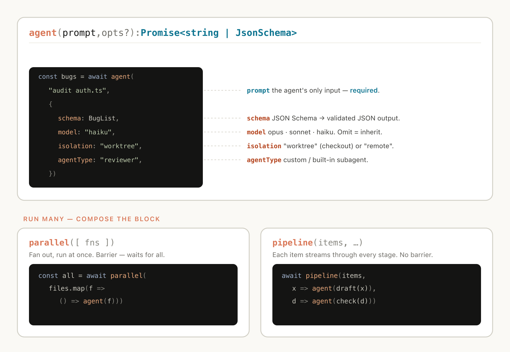
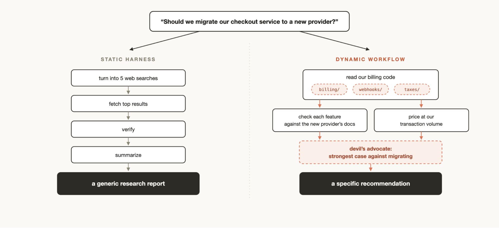
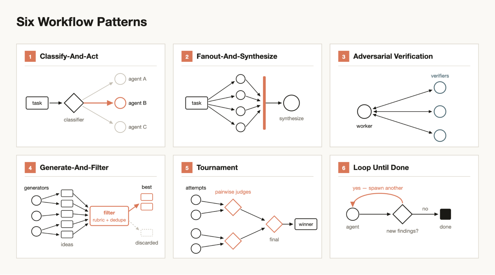
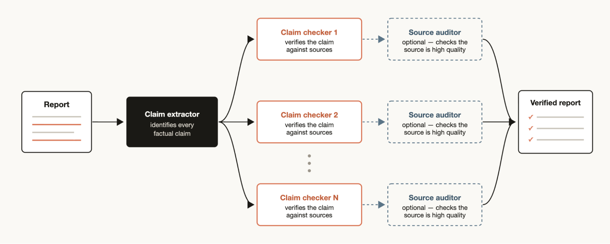
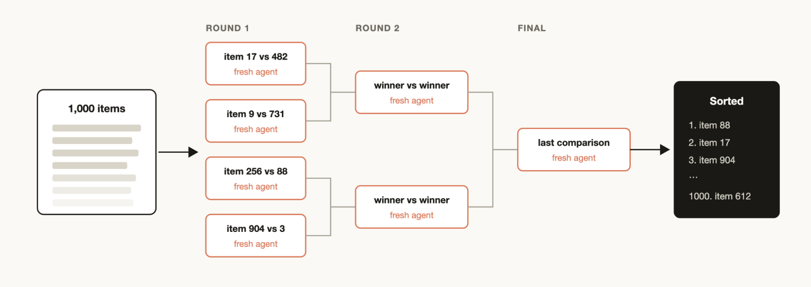
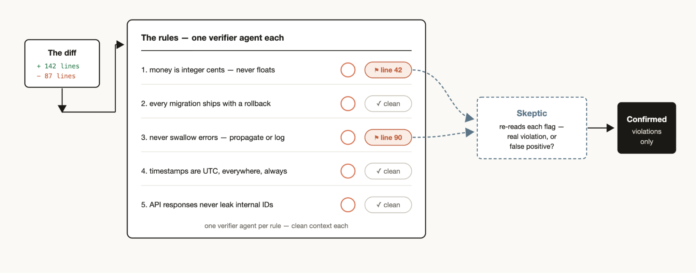
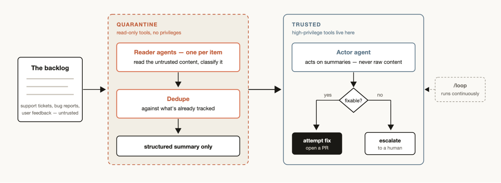
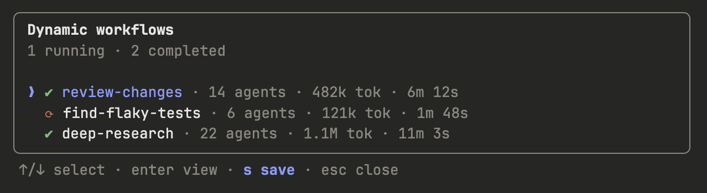
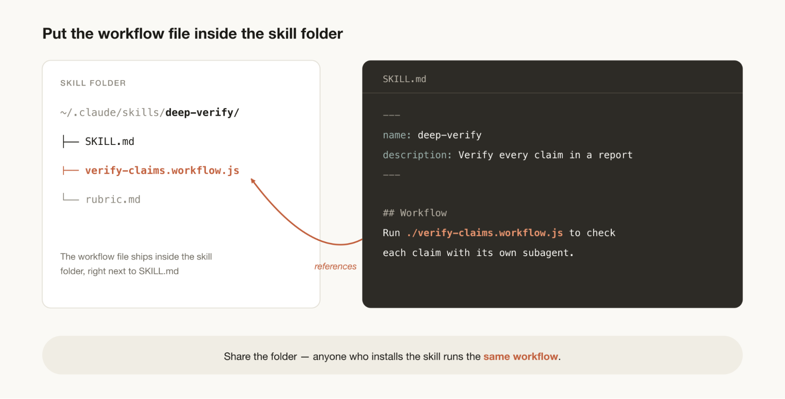

Claude Code는 이제 자신만의 멀티 에이전트 하네스(harness)를 즉석에서 작성하고 오케스트레이션할 수 있다. 다이내믹 워크플로(dynamic workflows)가 어떻게 동작하는지, 그리고 그것을 가장 잘 활용하는 패턴은 무엇인지 소개한다.
지난주 우리는 Claude Code에 다이내믹 워크플로를 출시했다. 이제 Claude는 눈앞의 작업에 맞춰 자신만의 하네스를 즉석에서 작성할 수 있다.
기본 Claude Code 하네스는 코딩을 위해 만들어졌지만, 알고 보면 많은 작업이 코딩 작업과 닮아 있기 때문에 다른 여러 종류의 작업에도 유용하다. 하지만 최고 성능을 내기 위해 Claude Code 위에 별도의 맞춤 하네스를 만들어야 했던 작업군도 있다. Research, 보안 분석, 에이전트 팀, Code Review 같은 것들이다.
워크플로를 쓰면 Claude Code 위에 하네스를 동적으로 만들 수 있어서, Claude가 이런 문제들을 훨씬 자연스럽게 풀 수 있다. 만든 워크플로를 다른 사람과 공유하고 재사용할 수도 있다.
이 글에서는 내가 워크플로를 처음 써 보며 얻은 경험과 배운 점을 공유해, 여러분이 최대한 활용할 수 있도록 하려 한다. 다만 모범 사례는 아직 만들어지는 중이라는 점을 기억하자. 다이내믹 워크플로는 토큰을 더 많이 쓰는 경우가 많으며, 복잡하고 가치가 높은 작업에 가장 잘 맞는다.
기술적인 세부 사항으로 들어가기 전에, 워크플로로 무엇이 가능한지 상상해 볼 수 있도록 예시 프롬프트 몇 개부터 보여 주고 싶다.
"이 테스트는 50번에 한 번쯤 실패한다. 재현하는 워크플로를 만들어라. 레이스에 대한 경쟁 가설들을 세우고, 증거를 견뎌낸 가설이 하나 남을 때까지 멈추지 마라."
"워크플로를 써서 내 최근 세션 50개를 훑어보고, 내가 반복해서 하는 교정을 캐낸 다음 되풀이되는 것들을 CLAUDE.md 규칙으로 만들어라."
"워크플로를 써서 지난 6개월간 Slack의 #incidents 채널을 뒤지고, 아무도 티켓을 올리지 않은 반복되는 근본 원인을 찾아라."
"내 사업 계획을 가져가서, 서로 다른 에이전트들이 투자자·고객·경쟁자의 관점에서 갈기갈기 뜯어보는 워크플로를 실행해라."
"여기 이력서 80개가 든 폴더가 있다. 워크플로를 써서 백엔드 직무 기준으로 순위를 매기고 상위 10명을 다시 한번 검증해라. 루브릭은 AskUserQuestion 도구로 나를 인터뷰해서 만들어라."
"이 CLI 도구의 이름이 필요하다. 워크플로를 써서 후보를 잔뜩 브레인스토밍하고 토너먼트를 돌려 상위 3개를 골라라."
"워크플로를 써서 우리 User 모델을 어디서나 Account로 이름을 바꿔라."
"내 블로그 글 초안을 훑어보고 워크플로를 써서 모든 기술적 주장을 코드베이스와 대조해 검증해라. 틀린 내용은 하나도 내보내고 싶지 않다."
다이내믹 워크플로는 서브에이전트를 띄우고 조율하는 데 쓰는 몇 가지 특수 함수가 포함된 JavaScript 파일을 실행한다.

다이내믹 워크플로에는 데이터 처리를 돕는 JSON, Math, Array 같은 표준 JavaScript 함수도 포함된다.
특히 알아 둘 만한 점은, 다이내믹 워크플로가 각 에이전트에 어떤 모델을 쓸지, 서브에이전트를 별도의 worktree에서 실행할지를 결정할 수 있다는 것이다. 덕분에 Claude가 필요한 지능 수준과 격리 수준을 스스로 고를 수 있다.
사용자 조작이나 터미널 종료 등으로 워크플로가 중단되더라도, 세션을 재개하면 워크플로가 멈춘 지점부터 이어서 진행한다.
기본 Claude Code 하네스에 작업을 시키면, 같은 컨텍스트 윈도 안에서 계획과 실행을 모두 해야 한다. 많은 코딩 작업에는 이 방식이 매우 효과적이지만, 오래 걸리거나, 대규모로 병렬이거나, 구조가 매우 정형화돼 있거나, 적대적(adversarial) 성격의 작업에서는 무너질 수 있다.
복잡한 작업을 하나의 컨텍스트 윈도에서 오래 수행할수록 Claude는 몇 가지 특정한 실패 양상에 더 취약해지기 때문이다.
워크플로를 만들면 각자 자기 컨텍스트 윈도와 집중된, 격리된 목표를 가진 별도의 Claude 서브에이전트들을 오케스트레이션하게 되므로 이런 문제에 맞서는 데 도움이 된다.
여러분은 이전에 Claude Agent SDK나 claude -p를 써서 여러 Claude Code 인스턴스를 함께 조율하는 정적(static) 워크플로를 만들어 봤을지도 모른다.
하지만 정적 워크플로는 모든 엣지 케이스에서 동작해야 하므로 대개 더 범용적이다. Claude Opus 4.8과 다이내믹 워크플로가 나오면서, 이제 Claude는 여러분의 사용 사례에 꼭 맞는 맞춤 하네스를 직접 작성할 만큼 똑똑해졌다.

다이내믹 워크플로는 Claude에게 하나 만들어 달라고 하기만 하면 바로 쓸 수 있다. 또는 트리거 단어 "ultracode"를 써서 Claude Code가 반드시 워크플로를 만들도록 할 수도 있다.
하지만 다이내믹 워크플로가 어떻게 동작하는지 멘털 모델을 세워 두면, 언제 써야 하는지와 프롬프트로 Claude를 어떻게 유도할지 이해하는 데 도움이 된다.
Claude가 워크플로를 만들 때 쓰고 서로 조합할 법한 몇 가지 흔한 패턴이 있다.

분류기 에이전트로 작업 유형을 판단한 다음, 유형에 따라 다른 에이전트나 동작으로 라우팅한다. 또는 마지막에 분류기를 둬서 출력을 결정한다.
작업을 여러 작은 단계로 쪼개고, 단계마다 에이전트를 하나씩 돌린 뒤 그 결과를 종합한다. 작은 단계가 아주 많을 때, 또는 각 단계가 서로 간섭하거나 오염되지 않도록 자기만의 깨끗한 컨텍스트 윈도를 갖는 게 이로울 때 특히 유용하다. 종합 단계는 일종의 장벽(barrier)이다. 펼쳐진 에이전트가 모두 끝나기를 기다렸다가 그들의 구조화된 출력을 하나의 결과로 합친다.
띄운 에이전트마다 별도의 에이전트를 하나 더 띄워, 그 출력을 루브릭이나 기준에 비추어 적대적으로 검증한다.
어떤 주제에 대해 아이디어를 여러 개 생성한 다음, 루브릭이나 검증으로 걸러내고, 중복을 제거하고, 가장 품질이 높고 검증된 아이디어만 돌려준다.
일을 나누는 대신 에이전트들이 경쟁하게 한다. N개의 에이전트를 띄워 각자 다른 접근법으로 같은 작업을 시도하게 한다. 그런 다음 판정 에이전트가 프롬프트나 모델을 사용해 결과를 쌍대 비교(pairwise) 방식으로 판정하고, 승자가 나올 때까지 이어간다.
일의 양을 알 수 없는 작업이라면, 정해진 횟수만큼 도는 대신 중지 조건(새로운 발견이 없거나 로그에 더 이상 오류가 없을 때)이 충족될 때까지 에이전트를 계속 띄우며 반복한다.
언제, 어떻게 Claude Code에 다이내믹 워크플로를 만들어 달라고 할지 창의적으로 생각해 보자. 내 경험상 워크플로는 때로 기술적이지 않은 일에 훨씬 더 유용하기도 했다.
Bun은 워크플로를 써서 Zig에서 Rust로 다시 작성되었다. 어떻게 했는지는 Jarred의 스레드에서 더 읽어볼 수 있고, 우리가 수백만 줄 코드베이스에서 AI 코드 마이그레이션을 어떻게 돌리는지도 볼 수 있다.
핵심은 작업을 처리해야 할 일련의 단계로 쪼개는 것이다. 예를 들어 호출 지점(callsite), 실패하는 테스트, 모듈 등으로 나눈다. 수정 건마다 worktree 안에서 서브에이전트를 띄워 수정하게 하고, 다른 에이전트가 적대적으로 리뷰한 뒤 머지한다. 자원을 많이 쓰는 명령은 쓰지 말라고 에이전트에 일러두는 것도 고려하자. 그러면 머신 자원이 바닥나지 않으면서 최대한 병렬로 돌릴 수 있다.
우리는 다이내믹 워크플로를 쓰는 딥 리서치 스킬(/deep-research)을 Claude Code 안에 공개했다. 구체적으로는 웹 검색을 펼치고, 출처를 가져오고, 그 주장들을 적대적으로 검증한 뒤, 인용이 달린 보고서를 종합한다.
하지만 이런 종류의 리서치는 웹 검색 말고도 쓸 데가 많다. 예를 들어 Slack의 맥락에서 상태 보고서를 작성해 달라고 하거나, 코드베이스를 깊이 탐색해 어떤 기능이 어떻게 동작하는지 조사해 달라고 할 수 있다.

반대로, 보고서가 참조하는 모든 사실 주장을 확인하고 출처를 달고 싶다면, 에이전트 하나가 사실 주장을 모두 찾아낸 뒤 각 주장을 자세히 확인하는 서브에이전트를 띄우는 워크플로를 만들면 된다. 출처 서브에이전트가 찾은 출처가 충분히 질이 높은지 확인하는 검증 에이전트를 추가로 둘 수도 있다.

Claude Code가 잘 평가할 거라고 믿는 어떤 정성적 기준으로 정렬하고 싶은 항목 목록이 있을 수 있다. 예를 들어 버그 심각도로 정렬한 지원 티켓 같은 것이다. 하지만 프롬프트 하나로 1,000개 이상의 행을 정렬하려 하면 품질이 떨어지고 컨텍스트에도 들어가지 않는다. 대신 토너먼트를 돌리거나, 쌍대 비교 에이전트의 파이프라인을 쓰거나(비교 판단이 절대 점수 매기기보다 더 신뢰할 만하다), 병렬로 버킷 순위를 매긴 뒤 합치자. 비교 하나하나가 자기 에이전트이므로, 결정론적 루프가 대진표를 들고 있고 컨텍스트에는 진행 중인 순서만 남는다.

CLAUDE.md에 넣어 두어도 Claude가 자꾸 놓치거나 어려워하는 특정 규칙 묶음이 있다면, 검증 에이전트가 반드시 확인해야 할 규칙 목록을 가진 워크플로를 만들자. 규칙 하나당 검증 에이전트 하나다. 규칙 판정이 적절한지 리뷰하는 회의론자(skeptic) 페르소나 서브에이전트를 만들면 오탐이 너무 많아지는 것을 막는 데 도움이 된다.
반대 방향도 통한다. 최근 세션과 코드 리뷰 코멘트에서 여러분이 반복해서 하는 교정을 캐내고, 병렬 에이전트로 클러스터링하고, 후보마다 적대적으로 검증한 뒤(이 규칙이 실제 실수를 막아 줬을까?), 살아남은 것들을 다시 CLAUDE.md로 증류하는 것이다.
디버깅은 독립적인 가설을 여러 개 세우고 검증할 때 가장 잘 되지만, 컨텍스트 윈도 하나만 쓰면 Claude는 자기 선호 편향에 빠질 수 있다.
워크플로는 서로 겹치지 않는 증거로부터 가설을 만드는 에이전트들을 띄워 이를 구조적으로 막을 수 있다. 예를 들어 로그, 파일, 데이터 각각에 별도의 에이전트를 두는 식이다. 그런 다음 각 가설이 검증자와 반박자로 이루어진 패널을 마주하게 한다.
이건 코드에만 해당하는 얘기가 아니다. 워크플로는 영업(3월에 매출이 왜 떨어졌나?), 데이터 엔지니어링(이 파이프라인이 왜 실패했나?), 그 밖의 어떤 사후 분석(post-mortem) 작업에도 쓸 수 있다.

모든 팀에는 사람이 다 처리할 수 없는 지원 큐, 버그 리포트, 혹은 다른 종류의 백로그가 있다.
트리아지 워크플로는 각 항목을 분류하고, 이미 추적 중인 것과 중복을 제거하고, 조치를 취한다. 조치란 수정을 시도하거나 사람에게 에스컬레이션하는 것일 수 있다.
트리아지 워크플로에 유용한 패턴은 격리(quarantine)다. 신뢰할 수 없는 공개 콘텐츠를 읽는 에이전트는 높은 권한의 행동을 하지 못하게 막고, 그런 행동은 정보에 따라 행동하는 역할을 맡은 에이전트가 대신 하도록 하는 것이다.
트리아지 워크플로를 /loop와 짝지으면 Claude가 이 일을 계속해서 하게 할 수 있다.
워크플로는 해법에 대한 여러 접근법을 탐색할 때, 특히 디자인이나 네이밍처럼 취향에 좌우되고 루브릭이 있으면 좋은 일에 유용할 수 있다.
Claude에게 여러 해법을 탐색하게 하고, 리뷰 에이전트에는 좋은 해법이 어떤 모습인지에 대한 루브릭을 주어 보자. 리뷰 에이전트가 기준을 충족했다고 느끼면 작업이 완료된다. 해법들을 루브릭에 따라 토너먼트로 순위를 매기거나 고를 수도 있다.
worktree 안에서 별도의 에이전트들을 띄운 다음, 특정 출력물을 루브릭에 비추어 비교하고 채점하는 비교 에이전트를 띄우면 특정 작업에 대한 가벼운 eval을 돌릴 수 있다. 예를 들어 여러분이 만든 스킬을 특정 기준에 따라 평가하고 다듬는 식이다.
여러분의 작업에 맞게 조정된, 어떤 모델을 쓸지 결정하는 분류기 에이전트를 만들자. 작업에 많은 도구 호출이 필요하고 실행 전에 조사를 해 보면 그 일에 가장 알맞은 모델을 알아낼 수 있을 때 도움이 된다.
예를 들어 "auth 모듈이 어떻게 동작하는지 설명해라"라는 작업에 가장 알맞은 모델은 auth 모듈에 파일이 몇 개나 있는지와 코드베이스의 모양에 따라 달라진다. 분류기 에이전트가 이 조사를 한 뒤, 예상되는 작업 복잡도에 따라 Sonnet이나 Opus로 라우팅할 수 있다.
워크플로는 새로운 기능이다. 크게 뛰어난 결과를 내는 사용 사례가 많지만, 모든 작업에 필요한 것은 아니며 토큰을 훨씬 더 많이 쓰게 될 수도 있다.
워크플로는 이전에 해 보지 않은 방식으로 Claude Code를 밀어붙이는 데 창의적으로 쓰는 것이 가장 좋다. 평범한 코딩 작업이라면 이렇게 자문해 보자. 정말 더 많은 컴퓨팅이 필요한가? 예를 들어 대부분의 전통적인 코딩 작업에는 리뷰어 5명짜리 패널이 필요하지 않다.
같은 판단은 한 단계 위의 아키텍처 계층에도 적용된다. 멀티 에이전트 vs 단일 에이전트 결정도 비슷한 논리를 따른다. 병렬성과 전문화는 그 조율 비용을 치를 만한 값어치를 해야 한다.
위에서 설명한 구체적인 기법을 써서 다이내믹 워크플로에 상세하게 프롬프트를 주면 가장 좋은 결과가 나온다.
워크플로는 큰 작업만을 위한 것이 아니다. 모델에게 "빠른 워크플로(quick workflow)"를 쓰라고 프롬프트할 수 있다. 예를 들어 어떤 가정에 대한 빠른 적대적 리뷰를 만들 수 있다.
/goal, /loop와 조합하기트리아지, 리서치, 검증처럼 반복할 수 있는 워크플로를 쓸 때는 /loop와 짝지어 일정 간격으로 실행하고, /goal로 엄격한 완료 요건을 정해 두자.
다이내믹 워크플로에 명시적인 토큰 사용 예산을 정해 작업이 쓰는 토큰 수를 제한할 수 있다. "10k 토큰을 써라"처럼 예산을 프롬프트에 넣으면 상한이 설정된다.
워크플로 메뉴에서 "s"를 누르면 워크플로를 저장할 수 있다. 저장한 것은 ~/.claude/workflows에 체크인하거나 스킬로 배포할 수 있다.

스킬로 공유하려면 JavaScript 워크플로 파일을 스킬 폴더에 넣고 SKILL.md에서 참조하면 된다. 유연성을 더 주고 싶다면, 스킬 안의 워크플로를 그대로 실행해야 하는 스크립트가 아니라 템플릿으로 생각하라고 Claude에게 프롬프트하는 것도 좋다.

워크플로는 Claude Code를 확장하는 유용한 새 방법이다. 여러분의 작업을 Claude가 돕게 하는 새로운 방식을 탐색하는 출발점으로 삼아 보기를 권한다. 어떻게 써야 가장 좋은지는 아직 발견할 것이 많다. 무엇을 찾았는지 알려 달라.
애초에 하네스에 무엇이 들어가야 하는지에 대한 원칙은 Claude로 개발할 때의 세 가지 하네스 설계 패턴을 참고하라.
이 글은 Anthropic에서 Claude Code를 만드는 Members of Technical Staff인 Thariq Shihipar와 Sid Bidasaria가 썼다.